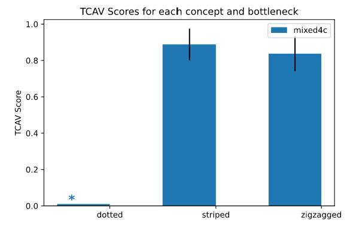

فصل ۲۹: تشخیص مفاهیم
عنوان اصلی: Detecting Concepts
منبع: https://christophm.github.io/interpretable-ml-book/detecting-concepts.html
نویسنده: Fangzhou Li @ دانشگاه کالیفرنیا، دیویس
مترجم: مریم محمودی
تاکنون با روشهای بسیاری برای توضیح مدلهای جعبهسیاه از طریق انتساب ویژگی آشنا شدیم. با این حال، رویکرد مبتنی بر ویژگی محدودیتهایی دارد. نخست، ویژگیها لزوماً از منظر تفسیرپذیری برای کاربر مناسب نیستند؛ برای مثال، اهمیت یک پیکسل منفرد در یک تصویر معمولاً تفسیر معناداری به دست نمیدهد. دوم، قدرت بیانی یک توضیح مبتنی بر ویژگی به تعداد ویژگیها محدود میشود.
رویکرد مبتنی بر مفهوم (concept-based approach) هر دو محدودیت یادشده را برطرف میکند. یک مفهوم (concept) میتواند هر انتزاعی باشد: رنگ، شیء، یا حتی یک ایده. با داشتن هر مفهومی که کاربر تعریف کند—حتی اگر شبکه عصبی بهطور صریح با آن مفهوم آموزش ندیده باشد—رویکرد مبتنی بر مفهوم آن را در فضای نهفتهای (latent space) که شبکه آموخته تشخیص میدهد. به عبارت دیگر، توضیحات حاصل از این رویکرد به فضای ویژگیهای شبکه عصبی محدود نیست.
در این فصل، عمدتاً بر مقاله TCAV: Testing with Concept Activation Vectors اثر Kim و همکاران (۲۰۱۸) تمرکز خواهیم کرد.
TCAV: آزمون با بردارهای فعالسازی مفهوم
TCAV برای تولید توضیحات سراسری (global explanations) برای شبکههای عصبی پیشنهاد شده است، هرچند از نظر تئوری برای هر مدلی که امکان محاسبه مشتق جهتی (directional derivative) در آن وجود داشته باشد نیز کارایی دارد. به ازای هر مفهوم دادهشده، TCAV میزان تأثیر آن مفهوم بر پیشبینی مدل برای یک کلاس خاص را اندازهگیری میکند. برای مثال، TCAV میتواند به این پرسش پاسخ دهد که مفهوم «راهراه» تا چه اندازه بر طبقهبندی تصویری به عنوان «گورخر» توسط مدل تأثیر میگذارد. از آنجا که TCAV رابطه میان یک مفهوم و یک کلاس را توصیف میکند—نه توضیح یک پیشبینی تکی—تفسیر سراسری مفیدی از رفتار کلی مدل ارائه میدهد.
نکته — مفهوم را با دقت تعریف کنید
هنگام استفاده از TCAV، اطمینان حاصل کنید که مفهوم مورد بررسی متمایز و بهخوبی تعریفشده است. این امر به اندازهگیری دقیقتر تأثیر آن مفهوم بر پیشبینیهای مدل کمک میکند.
بردار فعالسازی مفهوم (CAV)
یک CAV (Concept Activation Vector: بردار فعالسازی مفهوم) بهسادگی بازنمایی عددی است که یک مفهوم را در فضای فعالسازی یک لایه از شبکه عصبی تعمیم میدهد. CAV با نماد $\mathbf{v}_l^C$ نشان داده میشود و به مفهوم $C$ و لایه $l$ از شبکه عصبی—که به آن گلوگاه (bottleneck) مدل نیز میگویند—وابسته است.
برای محاسبه CAV یک مفهوم $C$، ابتدا باید دو مجموعهداده آماده کنیم: یک مجموعهداده مفهوم (concept dataset) که بازنماینده $C$ است، و یک مجموعهداده تصادفی که از دادههای دلخواه تشکیل شده است. برای مثال، برای تعریف مفهوم «راهراه»، میتوانیم تصاویری از اشیاء راهراه را به عنوان مجموعهداده مفهوم جمعآوری کنیم، در حالی که مجموعهداده تصادفی شامل تصاویر تصادفی بدون راهراه است. سپس یک لایه پنهان $l$ را هدف قرار میدهیم و یک طبقهبند دوکلاسه (binary classifier) آموزش میدهیم که فعالسازیهای تولیدشده توسط مجموعه مفهوم را از فعالسازیهای مجموعه تصادفی جدا کند. بردار ضرایب این طبقهبند آموزشدیده، همان CAV یعنی $\mathbf{v}_l^C$ خواهد بود. در عمل میتوان از SVM یا رگرسیون لجستیک به عنوان طبقهبند دوکلاسه استفاده کرد.
در نهایت، برای یک ورودی تصویری $\mathbf{x}$، میتوان «حساسیت مفهومی» (conceptual sensitivity) آن را با محاسبه مشتق جهتی پیشبینی در راستای CAV واحد اندازهگیری کرد:
$$S_{C,k,l}(\mathbf{x})=\nabla h_{l,k}(\hat{f}_l(\mathbf{x}))\cdot \mathbf{v}_l^C$$
که در آن $\hat{f}l$ ورودی $\mathbf{x}$ را به بردار فعالسازی لایه $l$ نگاشت میکند، و $h{l,k}$ بردار فعالسازی را به خروجی logit کلاس $k$ نگاشت میکند.
از نظر ریاضی، علامت $S_{C,k,l}(\mathbf{x})$ تنها به زاویه میان گرادیان $h_{l,k}(\hat{f}l(\mathbf{x}))$ و $\mathbf{v}l^C$ بستگی دارد. اگر زاویه کمتر از ۹۰ درجه باشد، $S{C,k,l}(\mathbf{x})$ مثبت خواهد بود و اگر بیشتر از ۹۰ درجه باشد، منفی. از آنجا که گرادیان $\nabla h{l,k}$ به جهتی اشاره دارد که خروجی را به سریعترین شکل ممکن بیشینه میکند، حساسیت مفهومی $S_{C,k,l}$ بهطور شهودی نشان میدهد که آیا $\mathbf{v}l^C$ نیز در جهتی مشابه است که $h{l,k}$ را بیشینه میکند یا نه. بنابراین $S_{C,k,l}(\mathbf{x})>0$ را میتوان اینگونه تفسیر کرد: مفهوم $C$ مدل را تشویق میکند که $\mathbf{x}$ را در کلاس $k$ طبقهبندی کند.
آزمون با CAVها (TCAV)
در بخش پیشین، نحوه محاسبه حساسیت مفهومی برای یک نقطه داده تکی را آموختیم. اما هدف ما تولید توضیحی سراسری است که حساسیت مفهومی کلی یک کلاس را نشان دهد. رویکردی بسیار ساده که TCAV بهکار میگیرد، محاسبه نسبت ورودیهایی است که حساسیت مفهومی مثبت دارند به کل ورودیهای آن کلاس:
$$TCAV_{Q,C,k,l}=\frac{|{ \mathbf{x} \in \mathbf{X}k : S{C,k,l}(\mathbf{x}) > 0 }|}{|\mathbf{X}_k|}$$
با بازگشت به مثال خودمان: میخواهیم بدانیم مفهوم «راهراه» چه تأثیری بر پیشبینی مدل در طبقه «گورخر» دارد. دادههایی که برچسب «گورخر» دارند جمعآوری میکنیم و حساسیت مفهومی را برای هر تصویر ورودی محاسبه میکنیم. سپس امتیاز TCAV برای مفهوم «راهراه» در پیشبینی کلاس «گورخر»، برابر است با تعداد تصاویر «گورخر» با حساسیت مفهومی مثبت تقسیم بر کل تعداد تصاویر «گورخر». به عبارت دیگر، اگر $TCAV$ با $C=\text{striped}$ و $k=\text{zebra}$ برابر ۰.۸ باشد، یعنی ۸۰٪ از پیشبینیها برای کلاس «گورخر» تحت تأثیر مثبت مفهوم «راهراه» هستند.
این نتیجه چشمگیر است، اما چطور میدانیم امتیاز TCAV معنادار است؟ در نهایت، CAV توسط مجموعه دادههای انتخابی کاربر و مجموعهداده تصادفی آموزش دیده است. اگر دادههای استفادهشده برای آموزش CAV نامناسب باشند، توضیح میتواند گمراهکننده و بیفایده باشد. برای رفع این مشکل، یک آزمون معناداری آماری ساده انجام میدهیم تا TCAV را قابلاطمینانتر کنیم. به جای آموزش تنها یک CAV، چندین CAV را با استفاده از مجموعهدادههای تصادفی مختلف—در حالی که مجموعهداده مفهوم ثابت نگه داشته میشود—آموزش میدهیم. یک مفهوم معنادار باید CAVهایی با امتیازهای TCAV سازگار تولید کند. مراحل دقیقتر آزمون به شرح زیر است:
۱. $N$ مجموعهداده تصادفی جمعآوری کنید؛ توصیه میشود $N$ حداقل ۱۰ باشد. ۲. مجموعهداده مفهوم را ثابت نگه دارید و امتیاز TCAV را با استفاده از هر یک از $N$ مجموعهداده تصادفی محاسبه کنید. ۳. یک آزمون t دوطرفه بر روی $N$ امتیاز TCAV در مقابل $N$ امتیاز TCAV دیگری که توسط یک CAV تصادفی تولید شدهاند اعمال کنید. CAV تصادفی را میتوان با انتخاب یک مجموعهداده تصادفی به عنوان مجموعهداده مفهوم به دست آورد.
هشدار — پیشفرضهای آزمون t را بررسی کنید
هنگام اجرای آزمون t دوطرفه برای امتیازهای TCAV، مطمئن شوید که دادههای شما پیشفرضهای آزمون—از جمله نرمال بودن توزیع و همگنی واریانسها—را برآورده میکنند. در غیر این صورت، استفاده از آزمونهای ناپارامتری را در نظر بگیرید.
همچنین در صورت داشتن فرضیههای متعدد، توصیه میشود از یک روش تصحیح آزمون چندگانه استفاده کنید. مقاله اصلی از تصحیح Bonferroni استفاده میکند و تعداد فرضیهها برابر با تعداد مفاهیم مورد آزمون است.
مثال
بیایید نگاهی به مثالی بیندازیم که در GitHub مخزن TCAV در دسترس است. در ادامه همان مثال کلاس «گورخر»، شکل ۲۹.۱ نتایج امتیازهای TCAV برای مفاهیم «راهراه» (striped)، «زیگزاگ» (zigzagged) و «خالخال» (dotted) را نشان میدهد. طبقهبند تصویری مورد استفاده InceptionV3 (Szegedy et al. ۲۰۱۶) است؛ یک شبکه عصبی کانولوشنی (convolutional neural network) که با دادههای ImageNet آموزش دیده است. هر مجموعهداده مفهوم یا تصادفی شامل ۵۰ تصویر است و از ۱۰ مجموعهداده تصادفی برای آزمون معناداری آماری با سطح معناداری ۰.۰۵ استفاده شده است. از تصحیح Bonferroni در اینجا استفاده نشده—چون تنها چند مجموعهداده تصادفی وجود دارد—اما در عمل توصیه میشود این تصحیح اعمال شود تا از کشف کاذب جلوگیری گردد.

نکته — از بیش از ۵۰ تصویر استفاده کنید
در عمل، ممکن است بخواهید در هر مجموعهداده از بیش از ۵۰ تصویر استفاده کنید تا CAVهای بهتری آموزش دهید. همچنین میتوانید از بیش از ۱۰ مجموعهداده تصادفی برای آزمون معناداری آماری دقیقتر بهره ببرید. علاوه بر این، میتوانید TCAV را بر روی چندین گلوگاه اعمال کنید تا دیدگاه جامعتری داشته باشید.
نقاط قوت
از آنجا که کاربران تنها ملزم به جمعآوری داده برای آموزش مفاهیم مورد نظرشان هستند، TCAV به تخصص یادگیری ماشین نیاز ندارد. این ویژگی TCAV را برای متخصصان حوزهای که قرار است مدلهای پیچیده شبکه عصبی خود را ارزیابی کنند بسیار کاربردی میکند.
ویژگی منحصربهفرد دیگر TCAV، قابلیت سفارشیسازی آن است که از طریق توضیحات فراتر از انتساب ویژگی فراهم میشود. کاربران میتوانند هر مفهومی را بررسی کنند، به شرطی که آن مفهوم با مجموعهداده مفهومی قابل تعریف باشد. به عبارت دیگر، کاربر میتواند تعادل میان پیچیدگی و تفسیرپذیری توضیحات را بر اساس نیاز خود تنظیم کند: اگر متخصص حوزه درک عمیقی از مسئله و مفهوم داشته باشد، میتواند مجموعهداده مفهوم را با دادههای پیچیدهتر شکل دهد تا توضیحی دقیقتر به دست آورد.
در نهایت، TCAV توضیحات سراسری ایجاد میکند که مفاهیم را به هر کلاسی ربط میدهند. یک توضیح سراسری این امکان را میدهد که بفهمید مدل بهطور کلی درست عمل میکند یا خیر—چیزی که معمولاً توضیحات محلی از عهده آن برنمیآیند. بنابراین TCAV میتواند برای شناسایی «نقصها» یا «نقاط کور» احتمالی که در طول آموزش مدل پدیدار شدهاند مورد استفاده قرار گیرد: شاید مدل شما یاد گرفته باشد که وزن نامناسبی به یک مفهوم بدهد. اگر کاربر بتواند این مفاهیم بد آموختهشده را شناسایی کند، میتواند از این اطلاعات برای بهبود مدل استفاده کند. فرض کنید طبقهبندی وجود دارد که «گورخر» را با دقت بالایی پیشبینی میکند. اما TCAV نشان میدهد که طبقهبند نسبت به مفهوم «خالخال» حساسیت بیشتری دارد تا «راهراه». این ممکن است نشاندهنده آن باشد که طبقهبند بهطور تصادفی با مجموعهدادهای نامتوازن آموزش دیده است و میتوانید مدل را با اضافه کردن تصاویر بیشتری از «گورخرهای راهراه» یا حذف تصاویر «گورخرهای خالخال» از مجموعه آموزشی بهبود دهید.
محدودیتها
TCAV ممکن است روی شبکههای عصبی کمعمقتر عملکرد ضعیفی داشته باشد. همانطور که بسیاری از پژوهشها نشان دادهاند (از جمله Alain و Bengio (۲۰۱۸))، مفاهیم در لایههای عمیقتر بیشتر قابل تفکیک هستند. اگر شبکهای بیش از حد کمعمق باشد، لایههای آن ممکن است قادر به تفکیک مناسب مفاهیم نباشند و در نتیجه TCAV قابل اعمال نخواهد بود.
از آنجا که TCAV نیازمند حاشیهنویسی اضافی برای مجموعهدادههای مفهوم است، در مسائلی که دادههای برچسبخورده بهراحتی در دسترس نیستند، هزینه آن میتواند بسیار زیاد باشد. ACE که در بخش بعدی به آن اشاره خواهیم کرد، جایگزین ممکنی برای TCAV در موقعیتهایی است که حاشیهنویسی پرهزینه است.
هرچند TCAV به دلیل قابلیت سفارشیسازی مورد ستایش قرار میگیرد، اعمال آن بر روی مفاهیم بیش از حد انتزاعی یا کلی دشوار است. این مشکل عمدتاً ناشی از آن است که TCAV یک مفهوم را از طریق مجموعهداده مفهوم متناظر توصیف میکند. هرچه مفهومی انتزاعیتر یا کلیتر باشد—مانند «شادی»—دادههای بیشتری برای آموزش CAV آن مفهوم لازم است.
هرچند TCAV در اعمال بر دادههای تصویری محبوبیت یافته است، کاربردهای آن در دادههای متنی و دادههای جدولی نسبتاً محدود است.
سایر رویکردهای مبتنی بر مفهوم
رویکرد مبتنی بر مفهوم در سالهای اخیر توجه فزایندهای جلب کرده و روشهای جدید بسیاری از آن الهام گرفتهاند. در اینجا به اختصار به برخی از این روشها اشاره میکنیم و اگر به جزئیات بیشتری علاقه دارید، مطالعه آثار اصلی را توصیه میکنیم.
توضیح خودکار مبتنی بر مفهوم یا ACE (Automated Concept-based Explanation) (Ghorbani et al. ۲۰۱۹) را میتوان نسخه خودکار TCAV دانست. ACE مجموعهای از تصاویر یک کلاس را پردازش کرده و بر اساس خوشهبندی بخشهای تصویر بهصورت خودکار مفاهیم را استخراج میکند.
مدلهای گلوگاه مفهومی یا CBM (Concept Bottleneck Models) (Koh et al. ۲۰۲۰) شبکههای عصبی ذاتاً تفسیرپذیر هستند. یک CBM شباهت به مدل رمزگذار-رمزگشا (encoder-decoder) دارد؛ نیمه اول CBM ورودیها را به مفاهیم نگاشت میکند و نیمه دوم از مفاهیم نگاشتشده برای پیشبینی خروجی مدل استفاده میکند. فعالسازی هر نورون در لایه گلوگاه، اهمیت یک مفهوم را نشان میدهد. علاوه بر این، کاربران میتوانند فعالسازیهای نورونهای گلوگاه را دستکاری کنند تا توضیحات پادواقعی (counterfactual explanations) از مدل به دست آورند.
سفیدسازی مفهوم یا CW (Concept Whitening) (Chen, Bei, and Rudin ۲۰۲۰) رویکرد دیگری برای ساخت طبقهبندهای تصویری ذاتاً تفسیرپذیر است. برای استفاده از CW، یک لایه نرمالسازی—مانند لایه batch normalization—با یک لایه CW جایگزین میشود. از این رو، CW زمانی بسیار کاربردی است که کاربران بخواهند طبقهبندهای تصویری از پیش آموزشدیده خود را به مدلهایی ذاتاً تفسیرپذیر تبدیل کنند، بدون اینکه عملکرد مدل افت کند. CW به شدت از تبدیل سفیدسازی (whitening transformation) الهام گرفته است و اگر به یادگیری بیشتر درباره CW علاقه دارید، مطالعه ریاضیات پشت این تبدیل را توصیه میکنیم.
نرمافزار
کتابخانه رسمی Python مربوط به TCAV به TensorFlow نیاز دارد، اما نسخههای دیگری نیز بهصورت آنلاین پیادهسازی شدهاند. دفترچههای Jupyter آساناستفاده نیز در مخزن tensorflow/tcav در دسترس هستند.
Alain, Guillaume, and Yoshua Bengio. 2018. “Understanding Intermediate Layers Using Linear Classifier Probes.” arXiv. https://doi.org/10.48550/arXiv.1610.01644.
Chen, Zhi, Yijie Bei, and Cynthia Rudin. 2020. “Concept Whitening for Interpretable Image Recognition.” Nature Machine Intelligence 2 (12): 772–82. https://doi.org/10.1038/s42256-020-00265-z.
Ghorbani, Amirata, James Wexler, James Zou, and Been Kim. 2019. “Towards Automatic Concept-Based Explanations.” In Proceedings of the 33rd International Conference on Neural Information Processing Systems, 32:9277–86. 832. Red Hook, NY, USA: Curran Associates Inc.
Kim, Been, Martin Wattenberg, Justin Gilmer, Carrie Cai, James Wexler, Fernanda Viegas, and Rory Sayres. 2018. “Interpretability Beyond Feature Attribution: Quantitative Testing with Concept Activation Vectors (TCAV).” In Proceedings of the 35th International Conference on Machine Learning, 2668–77. PMLR. https://proceedings.mlr.press/v80/kim18d.html.
Koh, Pang Wei, Thao Nguyen, Yew Siang Tang, Stephen Mussmann, Emma Pierson, Been Kim, and Percy Liang. 2020. “Concept Bottleneck Models.” In Proceedings of the 37th International Conference on Machine Learning, 5338–48. PMLR. https://proceedings.mlr.press/v119/koh20a.html.
Szegedy, Christian, Vincent Vanhoucke, Sergey Ioffe, Jon Shlens, and Zbigniew Wojna. 2016. “Rethinking the Inception Architecture for Computer Vision.” In 2016 IEEE Conference on Computer Vision and Pattern Recognition (CVPR), 2818–26. https://doi.org/10.1109/CVPR.2016.308.